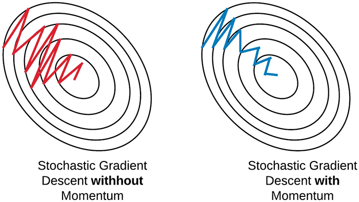
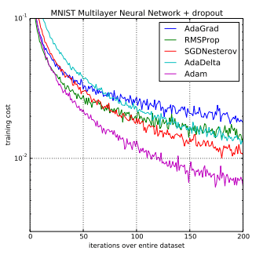

学習に関するテクニック#
ここまで勉強したように、ニューラルネットワークの学習は損失関数の最小化に帰着されます。これは高次元パラメータ空間において、複雑な目的関数の良い最適解を見出そうとする、非常に難しい問題です。
さらに、深いネットーワークでは、パラメータの数が膨大になり、事態はより深刻になってきます。
これを解決に導くため、様々なテクニックが組み合わされて利用されています。
確率的勾配降下法#
勾配降下法で損失関数を最適化する方法としては、学習データの全てのサンプルに対する損失関数を求め、それを最小化することが考えられます。つまり、各サンプル１個に関する損失\(L_n\)の和の勾配を用いて\(w\)を更新する方法を、バッチ学習(batch learning)と呼ぶことにします。
これに対して、一定数のサンプルの集合単位で重みを更新するのが、計算効率性の観点からより現実的な選択です。このサンプルの集合のことをミニバッチ(minibatch)と呼びます。
なお、このミニバッチを用いた勾配降下法は確率的勾配降下法(stochastic gradient descent)と呼ばれます。
ここで、ミニバッチ1つを\(D_t\)と書きます。添字は\(t\)回目の更新ごとにそのサンプル集合が変わることを表します。ミニバッチのリスト\(D_1,D2,...\)を考え、１つずつ順番に用いて重みを更新します。つまり\(t\)回目には\(D_t\)が含む全サンプルに対する損失の総和
を計算し、その勾配の方向にパラメータを一度だけ更新します。なお、\(N_t\)はこのミニバッチが含むサンプル数です。
ミニバッチを\(D_1,D2,...\)と順番に取り出して使い、一巡したら再度、最初から\(D_1,D2,...\)の順に取り出して使います。ここで、一巡することをエポック(epoch)と呼びます。
ニューラルネットワークの学習では一般に、数エポックから数十、あるいはそれ以上のエポック数分、上の過程を繰り返します。
過学習問題の制御#
過学習（overfitting）とは、機械モデルが学習データに対して過度に適合してしまい、新しいデータに対して良いパフォーマンスを発揮できなくなる状態をいいます。機械モデルの目的は、学習データには含まれないデータであっても、正しく識別できる汎化性能が望まれます。
そのため、過学習を抑制するテクニックが重要になってくるのです。
重みの減衰#
過学習抑制のためによく用いられる手法として、重みの減衰という方法があります。
過学習は、重みパラメータが大きな値を取ることによって発生することが多くのため、この手法は、学習の過程において、大きな重みをもつことに対してペナルティを課することで、過学習を抑制しようということです。
典型例が、損失関数に重みの二乗和(L2ノルムの二乗)を加えるL2正則化(L2 regularization)です。
ここで、\(\lambda\)は正則化の効果の強さを制御するパラメータです。
つまり、損失関数に\(\frac{\lambda}{2}||w||^2\)を加算します。\(\frac{\lambda}{2}||w||^2\)はペナルティとして、重み自身の大きさに比例して大きくなるため、重みが大きくなることを抑制することができます。
このことから、この方法は重みの減衰(weight decay)とも呼ばれます。
Dropout#
Dropoutは、ネットワークの隠れ層のニューロンを学習時ランダムに選別して削除することで過学習を抑制する手法です。
Dropoutの狙いは、学習時ネットワークの自由度を強制的に小さくし、過学習を避けることです。
またこうすることは、Dropoutによってニューロンをランダムに無効化したネットワークを多数、独立の学習し、推論時にそれらの結果を平均すると同じ効果があると考えられています。複数のネットワークの平均をとると推論の精度が一般的に向上することが知られており、Dropoutはこれと同じ効果をより小さい計算コストで実現していると考えることができます。
学習率の制御#
ニューラルネットワークの学習では、学習率の値が重要になります。学習率が大きくなりすぎると学習は収束せず、小さくしすぎると学習が非常に遅くなる、または局所的な最適解にとどまってしまい、真の最適解にたどり着けない可能性があります。
モメンタム#
SGDにおいてのパラメータ更新を安定化し、収束性を改善するモメンタム(momentum)という方法があり、SGDではほとんど常に採用されます。
モメンタムは、重みを更新時、重みの修正量に前回の重みの修正量の何割を加算する方法です。つまり、ミニバッチ\(D_{t-1}\)に対する重みを修正量を\(v_t=w_t-w_{t-1}\)を書くと、ミニバッチ\(D_t\)に対する更新を
と定めます。

モメンタム法は、過去の勾配の移動平均を蓄積し、持続的にその勾配の方向性を進むようにします。これにより、より効率的に最小値を探索できるようになります。
更新幅の適応的調整#
学習率を、学習の開始から終了まで固定したままとするとのは稀で、多くの場合時間と共に変化させます。重みの更新幅を適応的に調節する方法として、AdaGradという方法があります。
AdaGradは、パラメータの要素ごとに適応的に学習率を調整しながら学習を行う手法です。
AdaGradの更新方法を数式で表しますと
ここで、\(h\)は、学習開始から現在に至る全更新について、勾配の二乗を加算したものです。(\(\odot\)は行列要素ごとの掛け算を意味します)
そして、パラメータを更新する際に、\(\frac{1}{\sqrt{h}}\)を乗算することで、学習のスケールを調整します。
この調整により、パラメータの要素の中に変動の大きい勾配に対しては小さい学習率、変動の少ない勾配に対しては大きい学習率を適用ことを意味します。
AdaGradでの更新では、学習が進めれば進めるほど、更新度合いは小さくなります。つまり、勾配の累積によって自動的に学習率が調整されます。初期学習率を適切に設定すれば、後の調整を大幅に減らすことができ、異なるパラメータに対して異なるスピードで学習が進むのを許容します。
Note
累積された勾配の二乗和が大きくなると、学習率が非常に小さくなり、最終的に学習が停滞することがあります。AdaGradの学習率が時間とともに過剰に減少してしまうという問題を解決するために、RMSPropといった手法が開発されました。これらは、AdaGradの利点を保ちながら、学習率の減少を制御することでより良い結果を得られるようになっています。
Adam#
Adamは、AdaGrad法にさらにモメンタムを導入したもので、実装上によく使われている方法になります。
ここでは、その理論の説明を避けますが、直感的には、モメンタム法とAdaGrad法の利点を組み合わせることで、効率的にパラーメータ空間を探索することが期待されます。

さらに、「重みの減衰項」をAdamに導入したAdamWという手法もあります。それがより良い結果をもたらす場合があります。